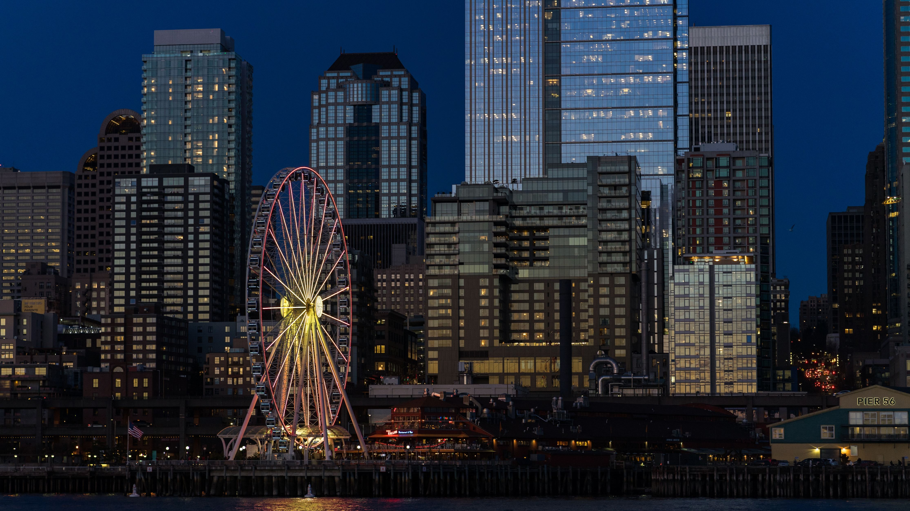
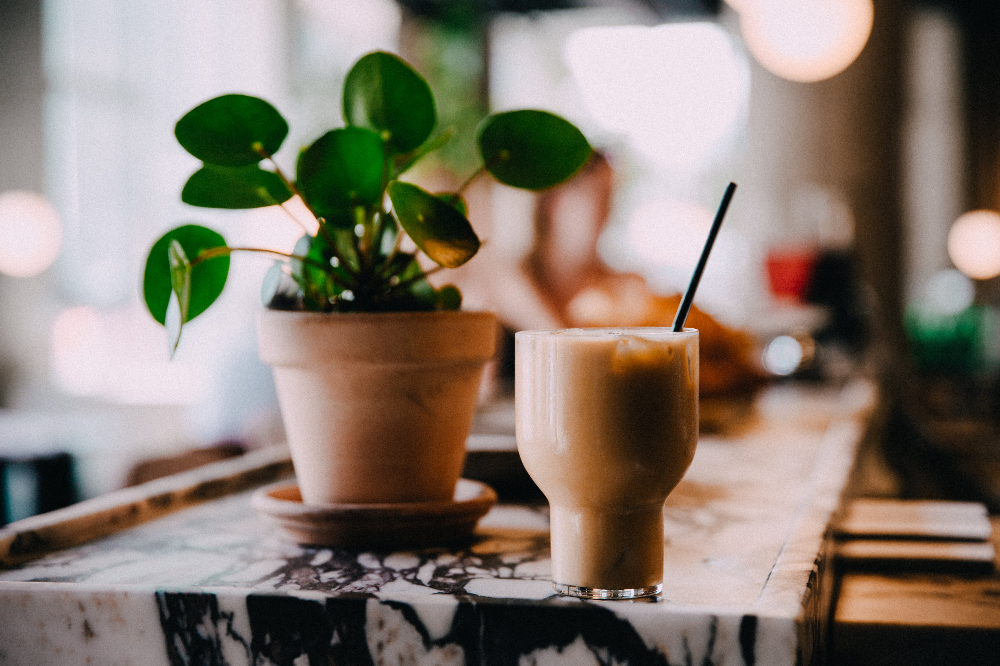

Coffee Is Part Of My Life
Seattle coffeeとは
アメリカ、シアトルで５年間コーヒーを淹れてきたバリスタが、コーヒの街シアトルで培った経験を日本に伝えます。

アメリカ合衆国ワシントン州シアトルを中心に、アメリカ西海岸から発展したスペシャルティコーヒーを指してシアトル系コーヒーといいます。
スターバックスコーヒーなどが代表的な存在です。
従来の浅く焙煎したコーヒー豆を使うアメリカンコーヒーとは一線を画し、イタリアのカフェやバールなどで提供されるエスプレッソをベースとしたコーヒーにアレンジを加えたものを表します。
カップサイズが比較的大きめなのと、シロップなどを入れたアレンジコーヒーが主になっているので、コーヒー感がミルクやシロップに負けないよう深煎りになっている場合が多いです。
Address
住所
〒123-456 東京都新宿区1-2-3456
営業時間
月曜日-土曜日 8-22時
日曜日 10-20時
電話番号,
12-3456-789